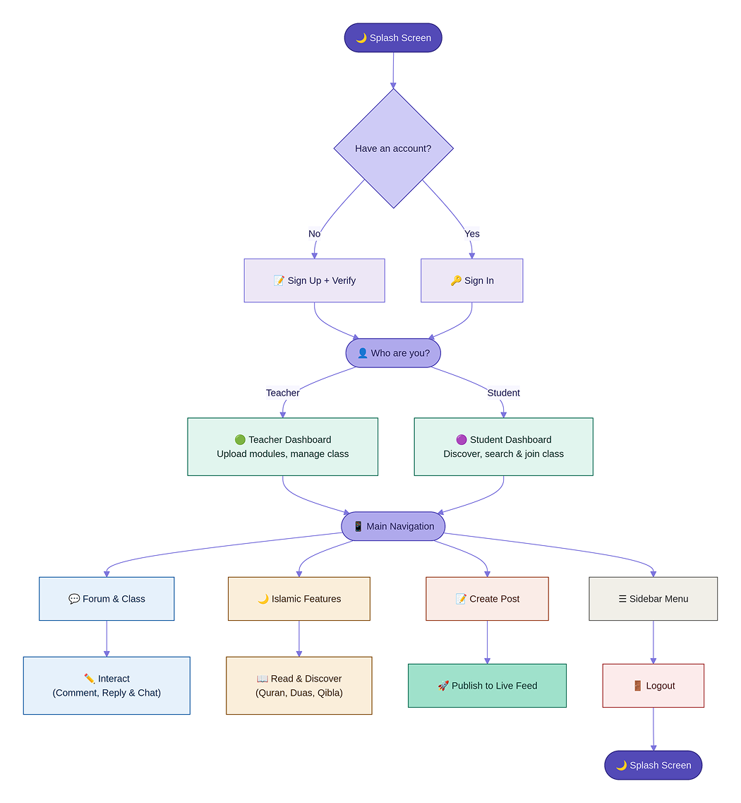
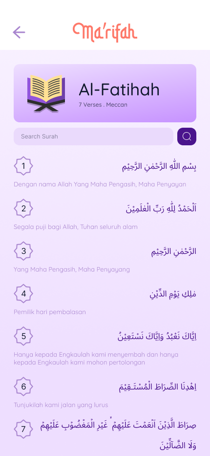
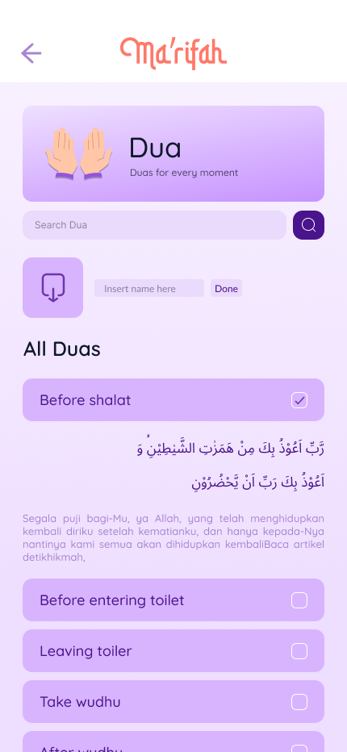

Ma'rifah
EduApp
A dedicated Islamic educational ecosystem providing seamless access to digital learning modules and integrated worship tools, designed to empower communities through structured knowledge.


A dedicated Islamic educational ecosystem providing seamless access to digital learning modules and integrated worship tools, designed to empower communities through structured knowledge.
Educational accessibility remains a significant hurdle, especially in remote or underserved areas where students and teachers face major geographical barriers. Traditional learning methods often struggle with resource management and maintaining consistent student engagement outside of regular school hours.
Ma'rifah provides a dedicated digital ecosystem that bridges this gap by integrating structured Islamic learning modules with essential worship tools. By offering location-based prayer reminders and interactive discussion forums, the platform empowers users to maintain a consistent learning and worship routine through a seamless, intuitive interface.
Architecture & Flow
Visualizing the comprehensive user journey and core information architecture, from initial onboarding to integrated worship and learning features.




Building Ma’rifah was a deep dive into solving educational accessibility through digital integration. I learned how to structure complex Islamic modules into an intuitive mobile interface that caters to both students and teachers, ensuring that geographic barriers no longer hinder quality learning. The project validated that a dedicated ecosystem—combining structured materials with daily worship tools and verified discussion forums—is essential to foster a consistent, mindful, and well-managed educational routine for the modern community.